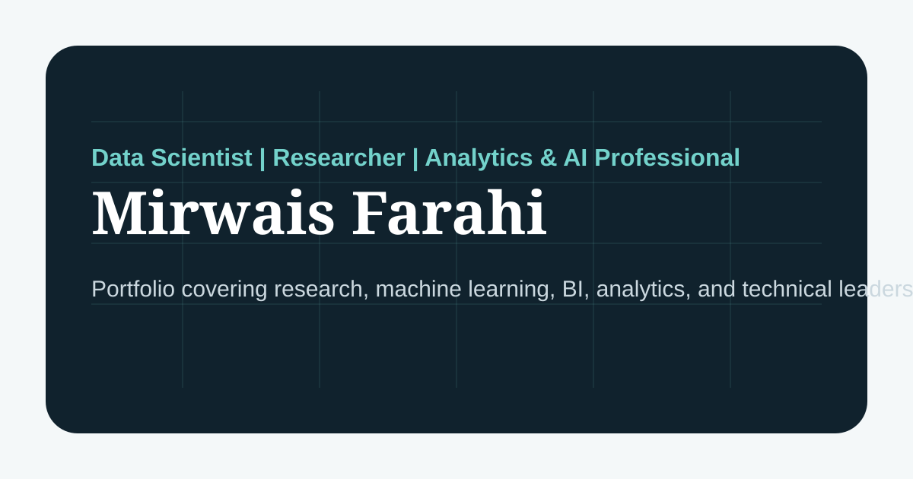

Machine Learning Models
Classification, prediction, model evaluation, and applied analytics workflows.
GitHub Projects
Classification, prediction, model evaluation, and applied analytics workflows.

Power BI and reporting dashboards for monitoring indicators and performance.

Python, R, SQL, and Excel-based workflows for clean analysis outputs.

Survey analysis, sampling support, and research-ready data summaries.

Validation checks, QA tracking, cleaning workflows, and field review tools.

Small applications and prototypes for data collection, reporting, and review.